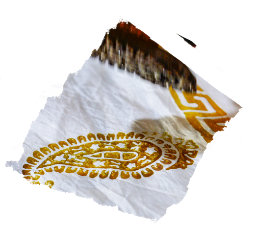
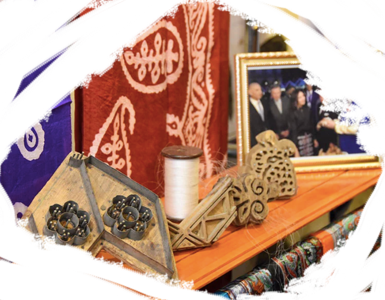

A region where one can create theri own kalaghai with theri choice of ornaments and color is Baskal. Baskal is a mountanious region of Azerbaijan located on the content of Asia, where tourists and locals make theri own scarfs. That region is known for this craft, there are many regions where the scarfs are made but this one is the most well known one in the country.

The silk Kalaghai has been made in my country for centuries and dates back to the silk road. The ornaments including the most important one, Buteh, are applied using special stencils called gelip. The stencils can be metal or wooden and there is hundreds of variations and ornaments available in most worskshops. If the stencils are wooden usually a pear tree is used, for the organic soft shapes, it can produce, and because it is such a common fruit in the culture that often can be seen in the miniatures like the “Nightime in a City”.

Even the scarf that you had clicked to end up on this page was created by Jamila, a local artist who traveled to Baskal to bring her own designs to life. Anyone can come to the capital of the country, Baku, and then from there take a train or a car to Baskal (or Basgal) and find an affordable room to stay. Once you are in the region you can ask locals where it would be possble to find a workshop that you could join.